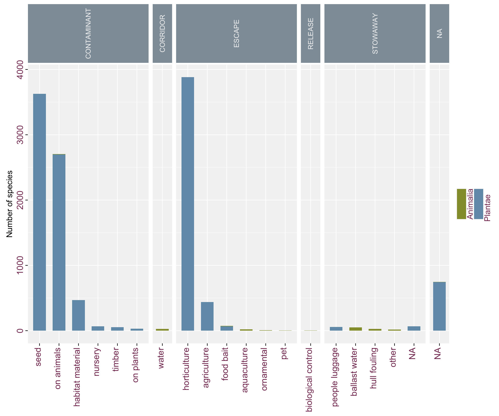
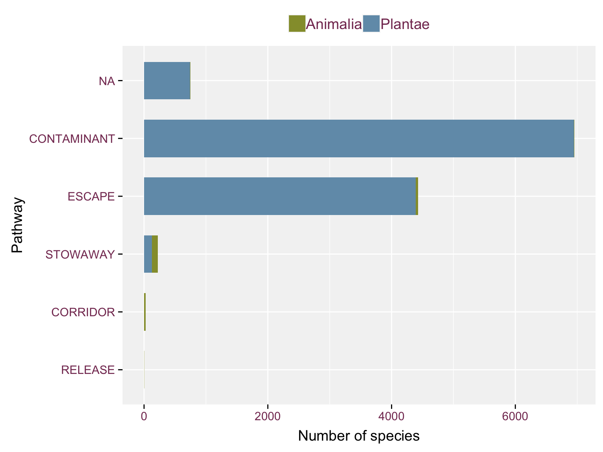

This document describes how to build indicators of Invasive Alien Species based on checklist data. In particular, this document takes into account:
Install trias package:
devtools::install_github("trias-project/trias")Load libraries:
# Tidyverse packages
library(tidyr)
library(dplyr)
library(magrittr)
library(stringr)
library(readr)
library(ggplot2)
# GBIF related packages
library(rgbif)
# project package
library(trias)
#other pckages
library(lazyeval)
library(INBOtheme)
library(stringr)data <- read_tsv("../data/interim/test_data_output_checklist_indicators.tsv")New functions should be written in trias official project package.
In order to not consider subspecies, please take care of grouping by species (see point 8 of #21).
See GitHub isue #19. Ths functionality is scripted inside a function, with the two usecase taken into account:
As the function is ad-hoc to the use-case, most options are hard-coded.
#' Pathway count indicator figure
#'
#' Both only the main category or using both category levels are included in the
#' graph, using the \code{subcategory} option
#'
#' @param data data.frame According to the specification of the Trias pipeline
#' @param subcategory boolean If TRUE, the subcategory levels are included in
#' the visualisation.
#'
#' @return
#' @export
#'
#' @examples
#' indicator_pathway(data)
#' indicator_pathway(data, subcategory = TRUE)
indicator_pathway <- function(data, subcategory = TRUE) {
# focus on pathway data counts
df_pathway <- data %>%
filter(kingdom %in% c('Plantae', 'Animalia')) %>%
group_by(pathway_level1,
pathway_level2, kingdom) %>%
count() %>%
ungroup()
# uppercase on category names for figure styling
df_pathway <- mutate_at(df_pathway,
.cols = c("pathway_level1"),
.funs = toupper)
# replace underscore by spaces
df_pathway <- df_pathway %>%
mutate(pathway_level2 = str_replace(pathway_level2, "_", " "))
if (subcategory) {
ggplot(df_pathway, aes(x = reorder(pathway_level2, -n),
y = n, fill = kingdom)) +
geom_bar(stat = "identity", width = .65) +
ylab("Number of species") +
facet_grid(. ~ pathway_level1, scales = "free_x",
space = "free_x") +
theme_inbo(base_size = 14) +
theme(
axis.text.x = element_text(angle = 90, hjust = 1,
vjust = 0.2, size = 15),
axis.title.x = element_blank(),
axis.text.y = element_text(size = 15, angle = 90,
hjust = 0.5),
axis.title.y = element_text(size = 14),
strip.text.x = element_text(angle = 90, size = 12),
legend.direction = "horizontal",
legend.position = "right",
legend.text = element_text(angle = 90, size = 14),
legend.title = element_blank(),
legend.text.align = -.6)
} else {
ggplot(df_pathway, aes(x = reorder(pathway_level1, n, function(x){sum(x)}),
y = n, fill = kingdom)) +
geom_bar(stat = "summary", fun.y = sum,
width = .65) +
xlab("Pathway") +
ylab("Number of species") +
coord_flip() +
theme_inbo(base_size = 14) +
theme(legend.position = "top",
legend.title = element_blank(),
legend.text = element_text(size = 14))
}
}Example usage of the function when using both category levels:
indicator_pathway(data, subcategory = TRUE)
Or when only interested in the main category in the graph:
indicator_pathway(data, subcategory = FALSE)